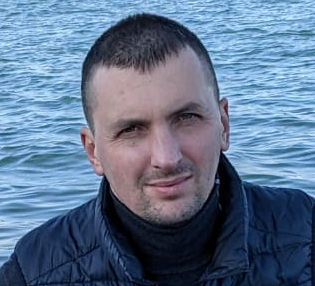

Пержун Ігор Анатолійович
 Дата народження: 21 вересня 1985р.
Контактні дані:
Адреса проживання: Україна,
Тернопільська обл. смт.
Підволочиськ.
Моб. телефон: +38(098)7361699
Viber, WhatsApp: +38(098)7361699
E-mail: iperzhun@gmail.com
Skype: iperzhun@gmail.com
Освіта
«Інститут управління природніми ресурсами» м. Коломия Спеціальність: Геодезія, картографія та землевпорядкування. Ступінь: Бакалавр. Роки навчання 2002-2006рр. Денна форма навчання.
«Київський національний університет будівництва та архітектури» Спеціальність: Землевпорядкування та кадастр. Ступінь: Спеціаліст. Роки навчання 2006-2007рр. Денна форма навчання.
Трудова діяльність
10.2009р. – 04.2011р. ТОВ «Мехтрансбуд». Посада: інженер – геодезист, Основна діяльність: Польові та камеральні роботи, оформлення та здача технічної документації. Напрямок: Будівництво гідротехнічних споруд (земляні та бетонні греблі), проект: «Дністровська ГЕС»
04.2011-03.2015рр. ТОВ «Енергетично-дорожнє будівництво» Посада: інженер – геодезист, Основна діяльність: Польові та камеральні роботи, оформлення та здача технічної документації. Напрямок: Будівництво гідротехнічних споруд та виконання будівельно- земляних робіт (земляні та бетонні греблі, підпірні стінки, кабельні канали, водовідвідні споруди, будівництво бетонних та ґрунтових технічних доріг). проект: «Дністровська ГЕС» Відкрита розробка бурого вугілля, кар’єр «Лисяча балка» Будівництво та ремонт автомобільних доріг (асфальтобетонне покриття).
08.2017-08.2018рр. ТОВ «ІГХ Рус Холдінг» Посада: інженер – геодезист, Основна діяльність: Польові та камеральні роботи, оформлення та здача технічної документації. Напрямок: Будівництво гідротехнічних споруд (монтаж металоконструкцій, трубопроводів, підйомних механізмів ), проект: «Мткварі ГЕС» Грузія.
09.2018-03.2019рр. ТОВ «Сакенергоремонті» Посада: виконроб, технічний консультант Основна діяльність: Ведення та контроль виконаних робіт, оформлення та здача технічної документації, проектна діяльність, надання технічної консультації, Напрямок: Будівництво гідротехнічних споруд, проекти: «Мткварі ГЕС»(ВРП, гірська розробка), «Сашуала ГЕС»(гірська розробка, спорудження мостів, технічних корпусів), «Кахарі ГЕС»(ВРП, кабельний канали, підпірні стінки) Грузія
11.2018р.- теперішній час. ТОВ «ІГХ Рус Холдінг» Посада: інженер – геодезист, інженер з техніки безпеки Основна діяльність: Польові та камеральні роботи, оформлення та здача технічної документації, моніторинг з техніки безпеки та охорони праці Напрямок: Будівництво гідротехнічних споруд, проекти: «Мткварі ГЕС»( монтаж металоконструкцій, трубопроводів, підйомних механізмів), «Інгурі ГЕС»( монтаж металоконструкцій, підйомних механізмів, реконструкція гідротехнічного обладнання) Грузія.
З 02.2021р. на посаді: начальника дільниці. Основна діяльність: Організація, планування, керівництво та контроль будівельно-монтажних робіт. Напрямок: Монтаж гідромеханічного обладнання та підйомних механізмів, проекти: «Інгурі ГЕС» (реконструкція гідротехнічного обладнання) Грузія. «Мткварі ГЕС»( монтаж гідротехнічного обладнання, підйомних механізмів (Козловий кран спеціальний 2х80т).